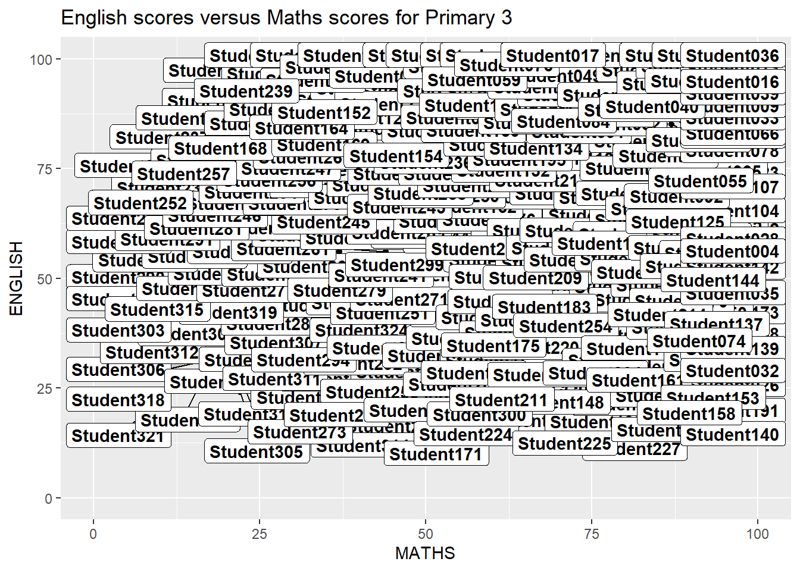
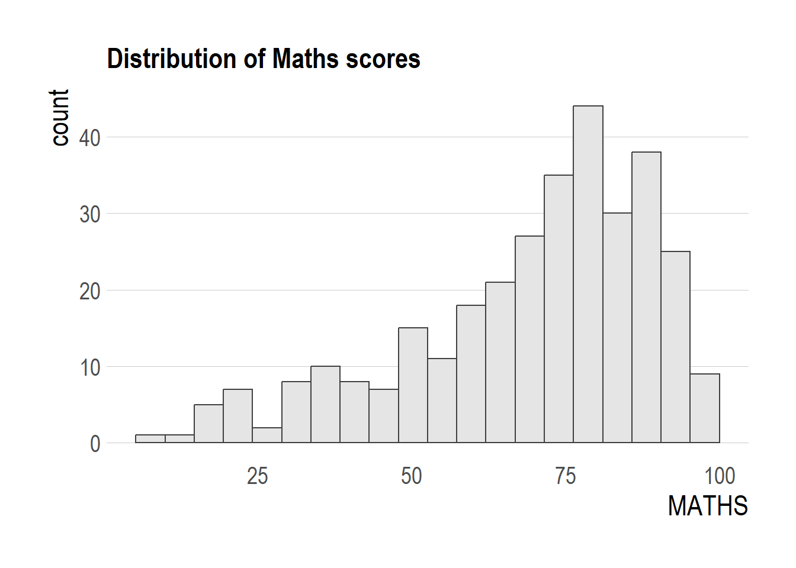
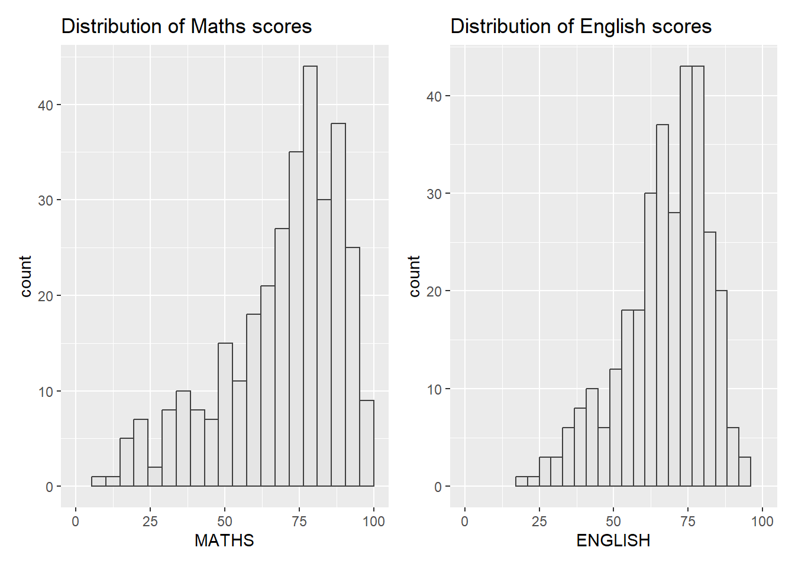

Code
pacman::p_load(tidyverse, ggrepel, patchwork, ggthemes, hrbrthemes)In this exercise, beside tidyverse, four R packages will be used. They are:
pacman::p_load(tidyverse, ggrepel, patchwork, ggthemes, hrbrthemes)It consists of year end examination grades of a cohort of primary 3 students from a local school. It is in csv file format.
There are a total of seven attributes in the exam_data tibble data frame. Four of them are categorical data type and the other three are in continuous data type.
exam_data <- read_csv("data/Exam_data.csv")One of the challenge in plotting statistical graph is annotation, especially with large number of data points.
ggplot(data=exam_data,
aes(x= MATHS, y=ENGLISH)) +
geom_point() +
geom_smooth(formula = y ~ x, method=lm,
linewidth=0.5) +
geom_label(aes(label = ID),
hjust = .5, vjust = -.5) +
coord_cartesian(xlim=c(0,100),
ylim=c(0,100)) +
ggtitle("English scores versus Maths scores for Primary 3")
ggrepel is an extension of ggplot2 package which provides geoms for ggplot2 to repel overlapping text as in the above example.
To do so, we simply replace geom_text() by geom_text_repel() and geom_label() by geom_label_repel.
Note: We will get the warning message: “ggrepel: 318 unlabeled data points (too many overlaps). Consider increasing max.overlaps” when we run the code snippet. However, in order to eliminate the warning message, we will need to set max.overlaps=Inf. This, however, makes the entire chart cluttered with labels (which seemed worse that the original chart above, without using ggrepel).
Alternatively, we can just set warning=FALSE to suppress the warning message and let ggrepel does its work of suggesting the ‘best’ number of labels.
To show the comparison, the left tab code snippet will present the warning message, while the right tab code snippet will show the chart is cluttered with labels when we set max.overlaps=Inf.
ggplot(data=exam_data,
aes(x= MATHS, y=ENGLISH)) +
geom_point() +
geom_smooth(formula = y ~ x, method=lm,
linewidth=0.5) +
geom_label_repel(aes(label = ID),
fontface = "bold") +
coord_cartesian(xlim=c(0,100),
ylim=c(0,100)) +
ggtitle("English scores versus Maths scores for Primary 3")ggplot(data=exam_data,
aes(x= MATHS, y=ENGLISH)) +
geom_point() +
geom_smooth(formula = y ~ x, method=lm,
linewidth=0.5) +
geom_label_repel(aes(label = ID),
fontface = "bold", max.overlaps=Inf) +
coord_cartesian(xlim=c(0,100),
ylim=c(0,100)) +
ggtitle("English scores versus Maths scores for Primary 3")
ggplot2 comes with eight built-in themes, they are: theme_gray(), theme_bw(), theme_classic(), theme_dark(), theme_light(), theme_linedraw(), theme_minimal(), and theme_void().
Refer to this link to learn more about ggplot2 Themes
ggplot(data=exam_data,
aes(x = MATHS)) +
geom_histogram(bins=20,
boundary = 100,
color="grey25",
fill="grey90") +
theme_gray() +
ggtitle("Distribution of Maths scores") 
ggthemes provides ‘ggplot2’ themes that replicate the look of plots by Edward Tufte, Stephen Few, Fivethirtyeight, The Economist, ‘Stata’, ‘Excel’, and The Wall Street Journal, among others.
In the example below, The Economist theme is used.
ggplot(data=exam_data,
aes(x = MATHS)) +
geom_histogram(bins=20,
boundary = 100,
color="grey25",
fill="grey90") +
ggtitle("Distribution of Maths scores") +
theme_economist()
It also provides some extra geoms and scales for ‘ggplot2’. Consult this vignette to learn more.
hrbrthemes package provides a base theme that focuses on typographic elements, including where various labels are placed as well as the fonts that are used.
#pacman::p_load(extrafont)
#font_import()
#loadfonts(device = "win")
ggplot(data=exam_data,
aes(x = MATHS)) +
geom_histogram(bins=20,
boundary = 100,
color="grey25",
fill="grey90") +
ggtitle("Distribution of Maths scores") +
theme_ipsum()The second goal centers around productivity for a production workflow. In fact, this “production workflow” is the context for where the elements of hrbrthemes should be used. Consult this vignette to learn more.
ggplot(data=exam_data,
aes(x = MATHS)) +
geom_histogram(bins=20,
boundary = 100,
color="grey25",
fill="grey90") +
ggtitle("Distribution of Maths scores") +
theme_ipsum(axis_title_size = 18,
base_size = 15,
grid = "Y")
From the example above, we learnt that
It is not unusual that multiple graphs are required to tell a compelling visual story. There are several ggplot2 extensions provide functions to compose figure with multiple graphs. In this section, we will create composite plot by combining multiple graphs. First, let us create three statistical graphics by using the code chunk below.
Firstly, the histogram for MATHS scores
p1 <- ggplot(data=exam_data,
aes(x = MATHS)) +
geom_histogram(bins=20,
boundary = 100,
color="grey25",
fill="grey90") +
coord_cartesian(xlim=c(0,100)) +
ggtitle("Distribution of Maths scores")
p1
Next, the histogram for ENGLISH scores
p2 <- ggplot(data=exam_data,
aes(x = ENGLISH)) +
geom_histogram(bins=20,
boundary = 100,
color="grey25",
fill="grey90") +
coord_cartesian(xlim=c(0,100)) +
ggtitle("Distribution of English scores")
p2
Lastly, we will draw a scatterplot for English score versus Maths score by as shown below
p3 <- ggplot(data=exam_data,
aes(x= MATHS,
y=ENGLISH)) +
geom_point() +
geom_smooth(formula = y ~ x, method=lm,
linewidth=0.5) +
coord_cartesian(xlim=c(0,100),
ylim=c(0,100)) +
ggtitle("English scores versus Maths scores for Primary 3")
p3
There are several ggplot2 extension’s functions support the needs to prepare composite figure by combining several graphs such as grid.arrange() of gridExtra package and plot_grid() of cowplot package.
In this section, We will use a ggplot2 extension called patchwork which is specially designed for combining separate ggplot2 graphs into a single figure.
Patchwork package has a very simple syntax where we can create layouts super easily. Here’s the general syntax that combines:
Figure below shows a composite of two histograms created using patchwork. Note how simple the syntax used to create the plot!
p1 + p2
We can plot more complex composite by using appropriate operators. For example, the composite figure below is plotted by using:
(p1 / p2) | p3
To learn more about, refer to Plot Assembly.
In order to identify subplots in text, patchwork also provides auto-tagging capabilities as shown in the figure below. For tagging,
((p1 / p2) | p3) +
plot_annotation(tag_levels = 'I')
Beside providing functions to place plots next to each other based on the provided layout. With inset_element() of patchwork, we can place one or several plots or graphic elements freely on top or below another plot.
p12 <- p1|p2
p3 + inset_element(p2,
left = 0.02,
bottom = 0.7,
right = 0.5,
top = 1)
Figure below is created by combining patchwork and theme_economist() of ggthemes package discussed earlier.
patchwork <- (p1 / p2) | p3
patchwork & theme_economist()